中国史⑤（五代十国・宋）
唐が滅亡した後の武人による混乱期（五代十国）を経て、中国を再統一した「宋」。この時代には、皇帝権力を強化する文治主義が確立し、江南の開発による経済の飛躍的発展や、士大夫（知識人）を中心とする新しい文化（朱子学など）が開花しました。しかし一方で、周辺の騎馬遊牧民の圧迫に苦しみ続ける時代でもありました。
1. 五代十国から北宋の成立と文治主義
907年に唐が滅亡した後、華北では5つの王朝が次々と交替し（五代）、華中以南では10余りの国が興亡（十国）する武断政治の乱世となりました。
華北では後梁・後唐・後晋・後漢・後周の5王朝が興亡しました。このうち後唐・後晋・後漢の3王朝は西突厥系の沙陀族（さだぞく）による政権でした。
この時代の都は、黄河と大運河の結節点であり、物流と経済の中枢として繁栄していた汴州（開封）が中心となりました。（※唐の長安が夜間外出禁止など厳しい「政治都市」だったのに対し、開封は華やかな「経済都市」へと変貌しました。）
後周の軍人であった趙匡胤（ちょうきょういん：太祖）が帝位につき、「宋」を建国しました。第2代太宗のときに中国を統一します。
- 文治主義：軍人（節度使）の力を抑え、科挙を通過した文人官僚によって政治を行う体制です。皇帝権力を強化するため、科挙の最終試験として皇帝自らが面接・審査を行う殿試（でんし）を導入しました。
- 新しい支配階級：唐末の動乱で門閥貴族が没落し、代わって農村から台頭した新興地主層である形勢戸（けいせいこ）が社会を支えました。彼らの中から科挙に合格して官僚となった家は官戸と呼ばれ、こうした知識人・官僚階級全体を士大夫（したいふ）と称します。
- 佃戸（でんこ）：地主（形勢戸）の土地を耕作して小作料を払う小作人のことです。
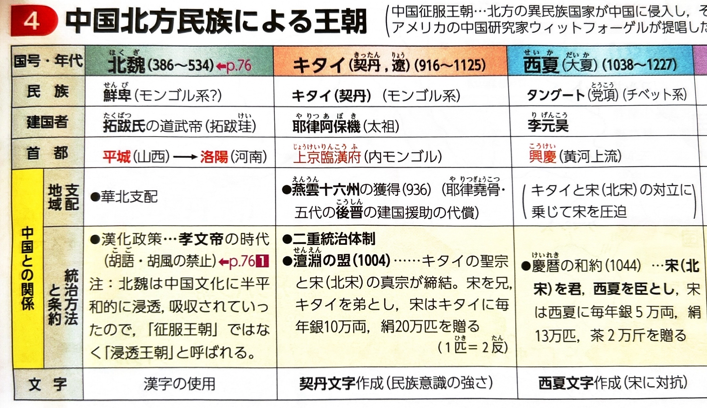
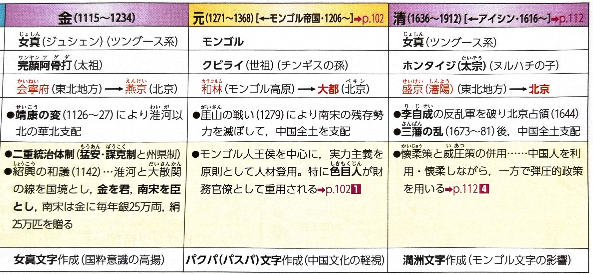
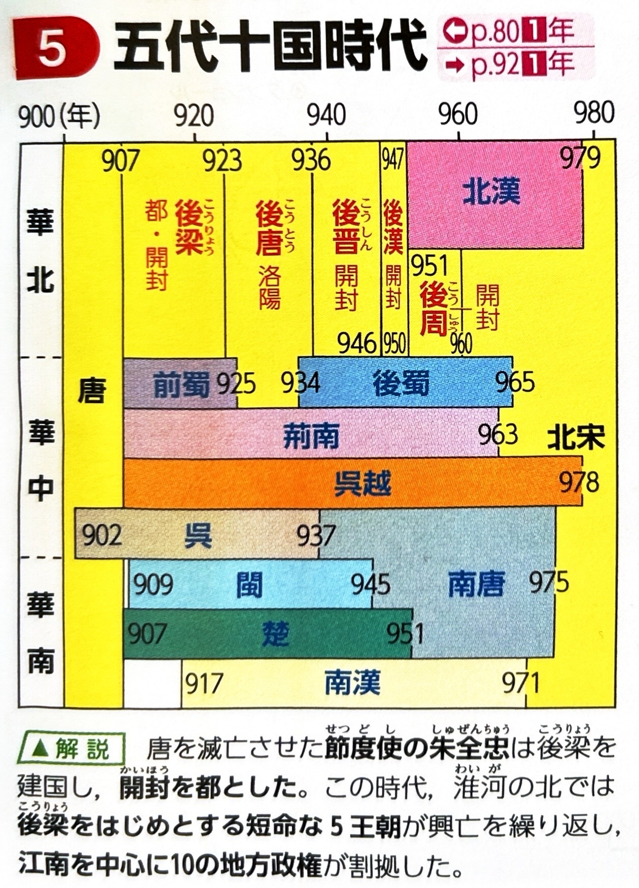
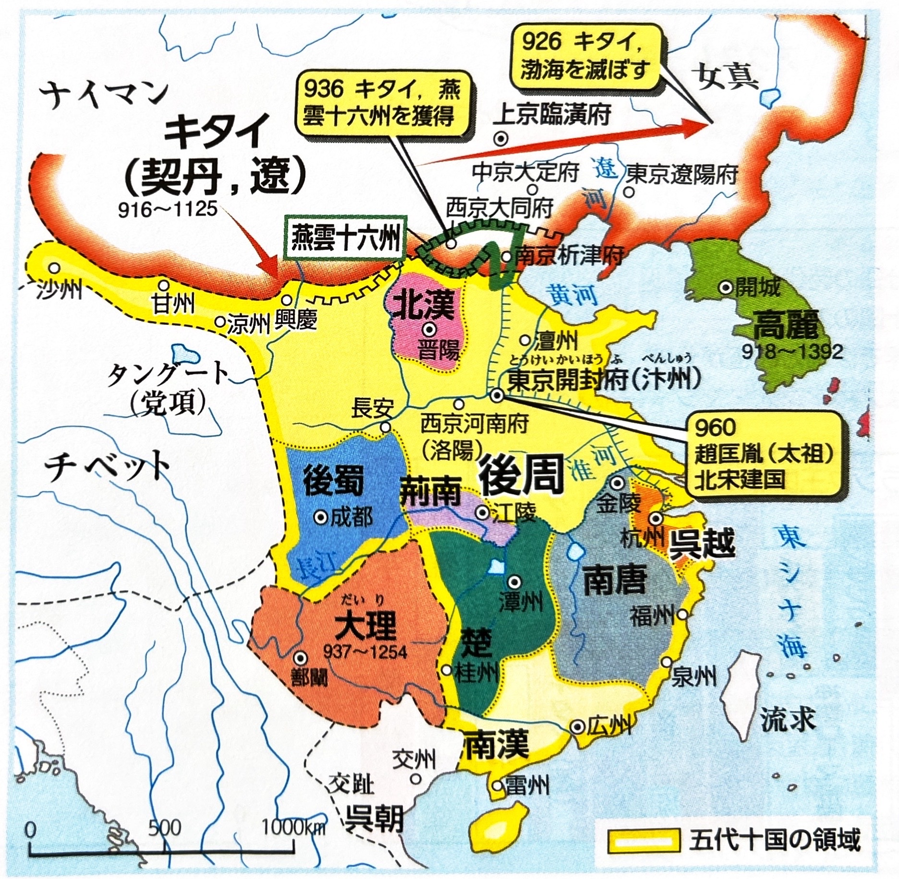
2. 周辺民族の圧迫と王安石の改革（新法）
宋は文治主義をとったため軍事力は弱く、北方の強大な遊牧民族国家の圧迫に苦しめられ、国境の平和を「金で買う」政策をとりました。
| 周辺国家 | 宋との関係と統治・文化 |
|---|---|
| キタイ （契丹 / 遼） |
モンゴル系の民族で耶律阿保機が建国し、渤海を征服。五代の後晋建国を援助した代償に燕雲十六州を獲得しました。宋は1004年に澶淵の盟（せんえんのめい）を結び、毎年多額の銀・絹を歳賜として贈ることで平和を買いました。 【統治】遊牧民には北面官、農耕民には南面官を用いる二重統治体制を実施し、漢字の影響を受けた独自の契丹文字を作りました。 |
| 西夏 （タングート） |
チベット系の民族で李元昊が建国。シルクロード方面から宋を圧迫し、1044年の慶暦の和約で、宋から銀・絹・茶の歳賜を得ました。漢字を模した西夏文字を使用しました。 |
【王安石の改革と党争】
周辺国への歳賜や、膨大な有給官僚・軍人の人件費（冗官・冗兵）により、宋の財政は悪化しました。そこで第6代神宗は、宰相に王安石を登用し、「新法」と呼ばれる富国強兵策を実施させました。
- 新法の主な内容：農民に低利で資金を貸す青苗法（せいびょうほう）、中小商人を保護する市易法、各地の特産物を政府が買い上げ不足地で売却する均輸法、労役の代わりに免役銭を納めさせる募役法、農閑期に軍事訓練を行い民兵とする保甲法など。
- 旧法党との対立：新法は中小農民・商人を保護する一方、大地主や大商人の利益を抑制するものでした。そのため、大地主出身の官僚（士大夫）たちは旧法党を形成し、『資治通鑑』の著者である司馬光や蘇軾らを中心に激しく反発しました。この激しい派閥争い（党争）により、宋の国力はさらに傾きました。
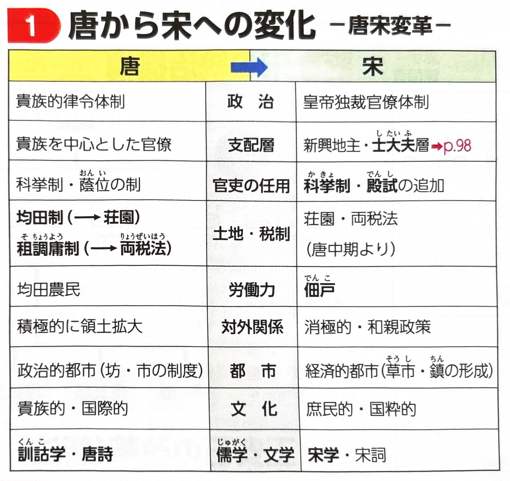
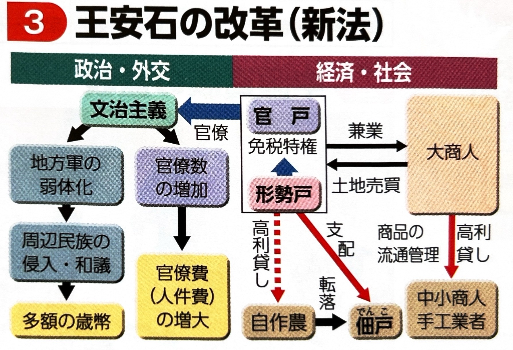
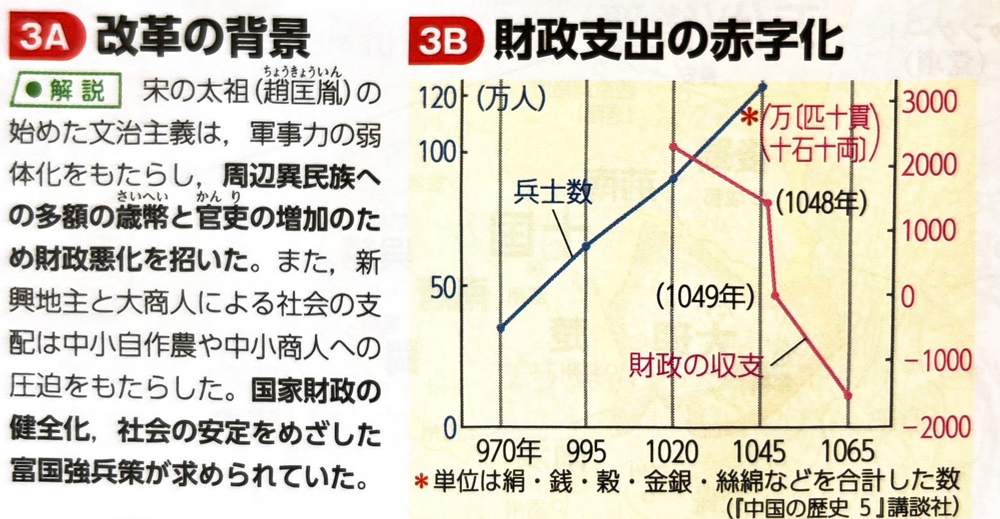
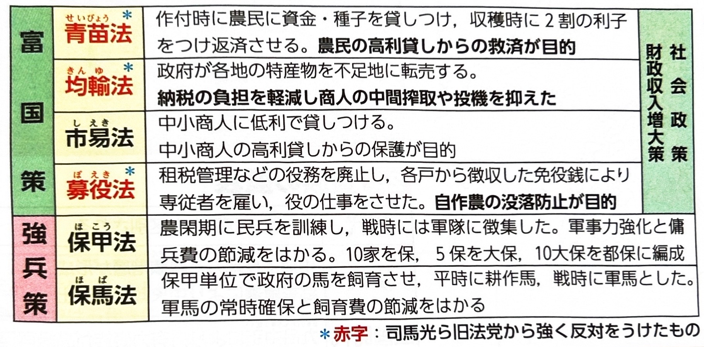
3. 金の台頭と南宋への移行（靖康の変）
12世紀初頭、東北地方で半猟半農の生活を送っていたツングース系の女真族（完顔阿骨打）が「金」を建国しました。（金では、軍事・行政組織として猛安・謀克（もうあん・ぼうこく）の制度が用いられ、女真文字が作られました。）
金は宋と同盟を結んでキタイ（遼）を滅ぼしました（※遼の王族・耶律大石は中央アジアへ逃れカラ・キタイ（西遼）を建国）。しかしその後、約束を破った宋に金が侵攻して都の開封を占領しました。皇帝の欽宗や上皇（徽宗）らが北方へ拉致され、北宋は滅亡しました。
皇族の高宗が江南へ逃れ、臨安（現在の杭州）を都として宋を再興しました。金への対応をめぐり、主戦派の岳飛と和平派の秦檜（しんかい）が対立しましたが、秦檜が実権を握り、金と屈辱的な講和を結びました。
（※国境は淮河（わいが）・秦嶺（しんれい）山脈のラインとなり、南宋は金に臣下の礼をとり「歳貢」を贈ることになりました。）
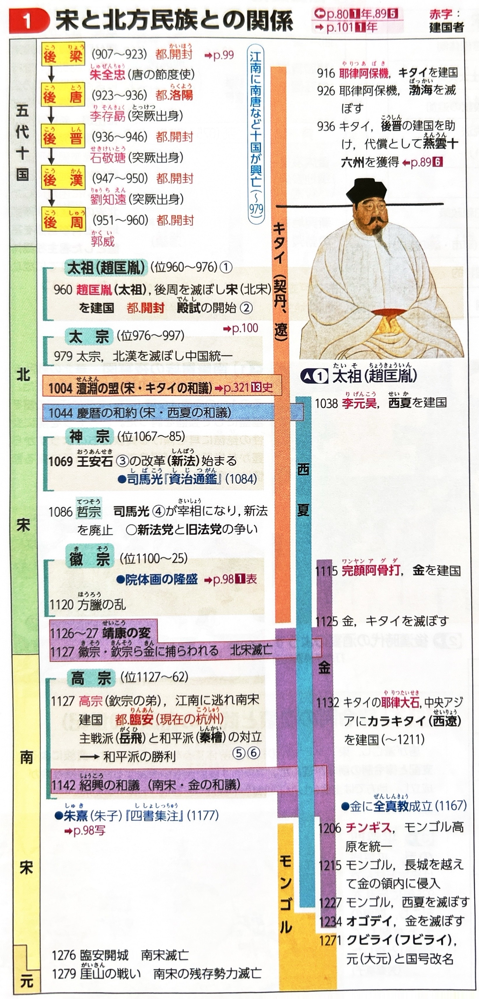
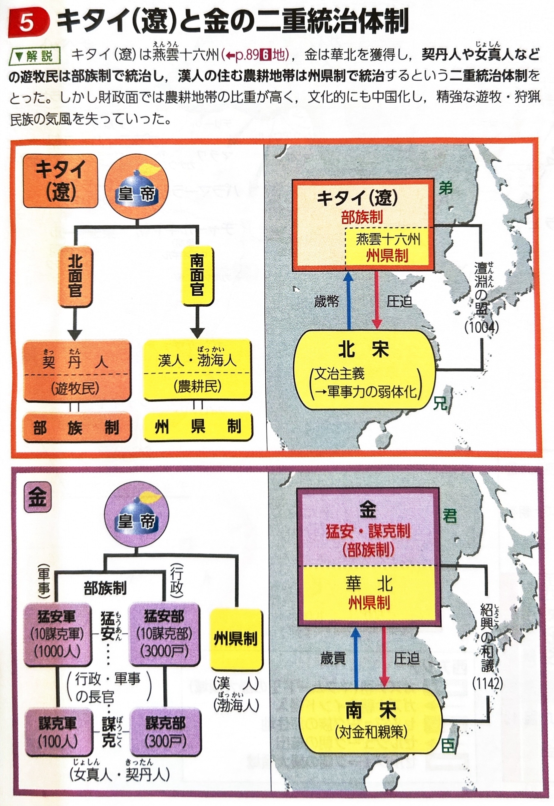
4. 宋代の社会と経済の発展
政治的・軍事的には弱かった宋ですが、経済や文化の面では「唐宋変革」と呼ばれるほど飛躍的な発展を遂げ、庶民文化が花開きました。
- 農業（江南の開発）：長江下流域（江浙地方）で湿地を堤防で囲った囲田の開発が進み、ベトナムから干ばつに強い早稲である占城稲（チャンパ米）が導入されました。これにより米の生産量が激増し、「蘇湖（江浙）熟すれば天下足る」と言われるほどの大穀倉地帯となりました。
- 商業の発展：唐代の厳しい規制が解かれ、自然発生的な市場である「草市」が「鎮」と呼ばれる商業中心地へと発展しました。商人たちの同業組合である「行（こう）」や、手工業者の組合「作（さく）」が組織されました。
- 貨幣経済：銅銭（宋銭）が大量に鋳造されて日本などへも輸出されたほか、世界初の紙幣といわれる北宋の「交子（こうし）」や南宋の「会子（かいし）」が広く流通しました。（※金でも交鈔という紙幣が発行されました。）
- 産業と貿易：景徳鎮の陶磁器（白磁・青磁）や茶の生産が普及しました。海上貿易も活発になり、明州、広州、泉州（ザイトン）などの港には貿易を管理する市舶司が置かれました。
- 都市生活：都の開封や臨安では、瓦市（繁華街）に茶館や飲食店（酒楼）、演芸場（勾欄）が立ち並び、夜間営業の規制もなく活気に満ちていました。その様子は張択端の絵巻物『清明上河図』に描かれています。
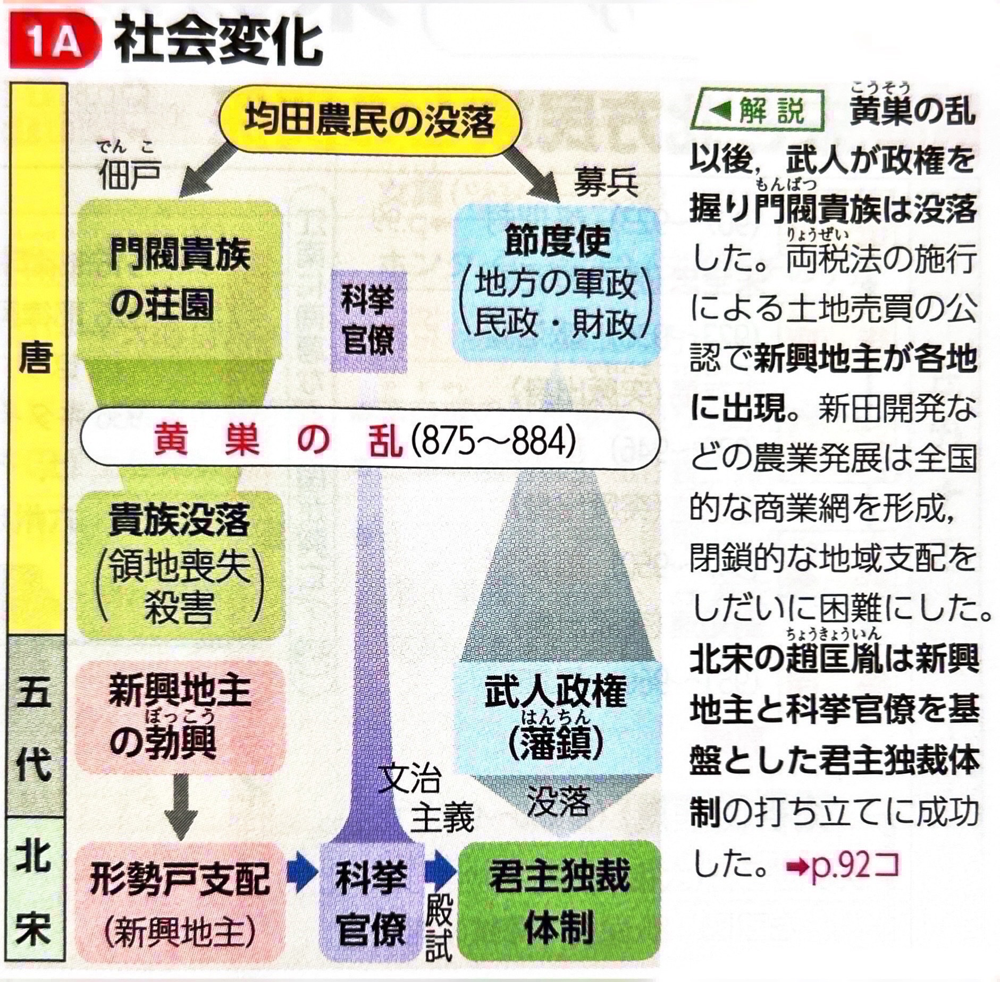
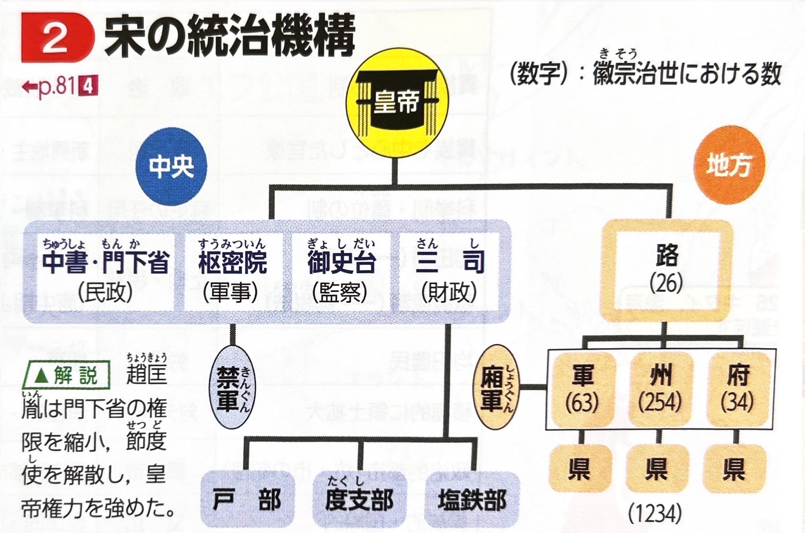
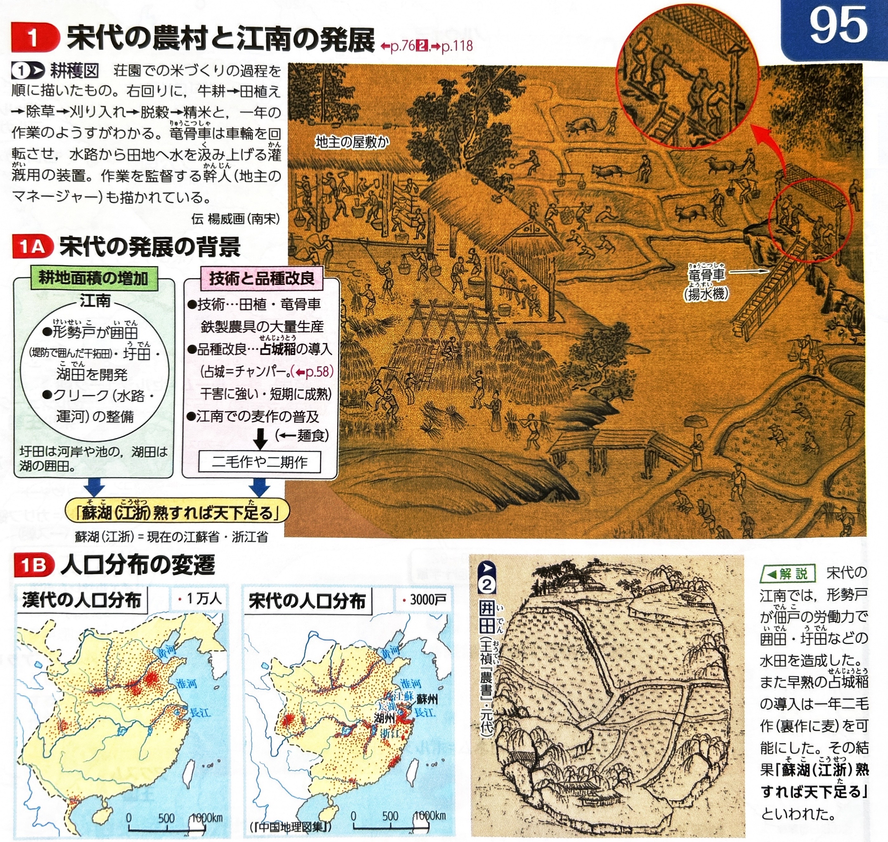
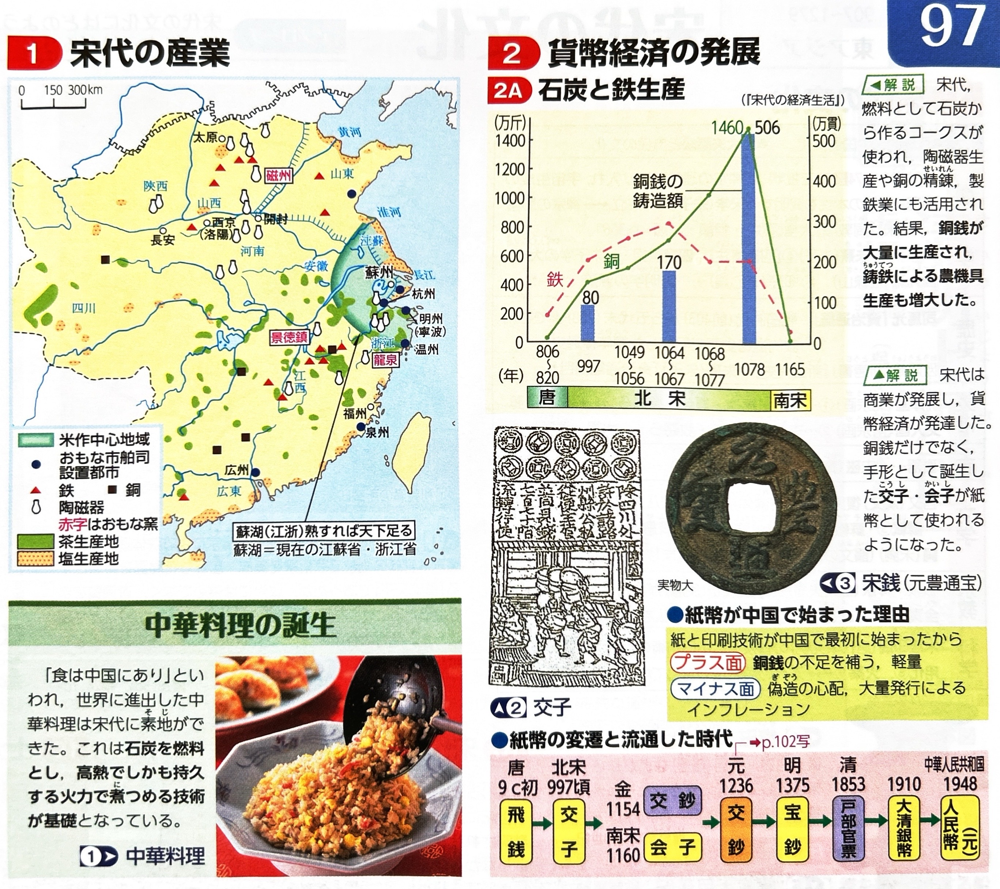
5. 宋代の文化（士大夫の文化と三大発明）
科挙による文人官僚（士大夫）を中心に、新しい学問や芸術が生まれました。
| 分野 | 特徴と代表的な人物・事項 |
|---|---|
| 儒学 （朱子学） |
字句の解釈にとどまる唐代までの訓詁学から脱却し、宇宙の根本原理（理）を探求する新しい儒学（宋学）が誕生しました。北宋の周敦頤（『太極図説』）や程顥・程頤兄弟（二程子）から始まり、南宋の朱熹（朱子）が大成しました。 上下の身分や君臣関係を重んじる大義名分論（華夷の別）を説き、『論語』『孟子』『大学』『中庸』の四書を重視しました。※朱熹の主知主義（性即理）に対し、陸九淵は「心即理」を説き、のちの陽明学へと繋がります。 |
| 宗教の展開 |
・道教：華北では王重陽が坐禅や瞑想を重視する全真教を開きました。江南では正一教が盛んになりました。 ・仏教：士大夫層には禅宗が、民衆には浄土宗が広まりました。のちに浄土信仰は弥勒下生信仰と結びつき、世直しを説く白蓮教へと発展しました。 |
| 歴史学 | 旧法党のリーダーでもあった司馬光が、戦国時代から五代末までの歴史を年代順に記した『資治通鑑（しじつがん）』を編年体で著しました。 |
| 文学・美術 |
・文学：欧陽脩、蘇軾、王安石らが唐宋八大家として活躍し四六駢儷体を批判（古文復興）。また庶民文学として「詞（宋詞）」や雑劇が流行しました。 ・美術：徽宗などの宮廷画家による写実的・装飾的な院体画（北宗画）と、士大夫（知識人）が精神性を重んじて描く自由な画風の文人画（南宗画）が発達しました。 |
| 三大発明 | 火薬、羅針盤、木版印刷の技術が実用化されました。これらはのちにイスラーム世界を経由してヨーロッパへと伝わり、ルネサンスや大航海時代に大きな影響を与えました。 |
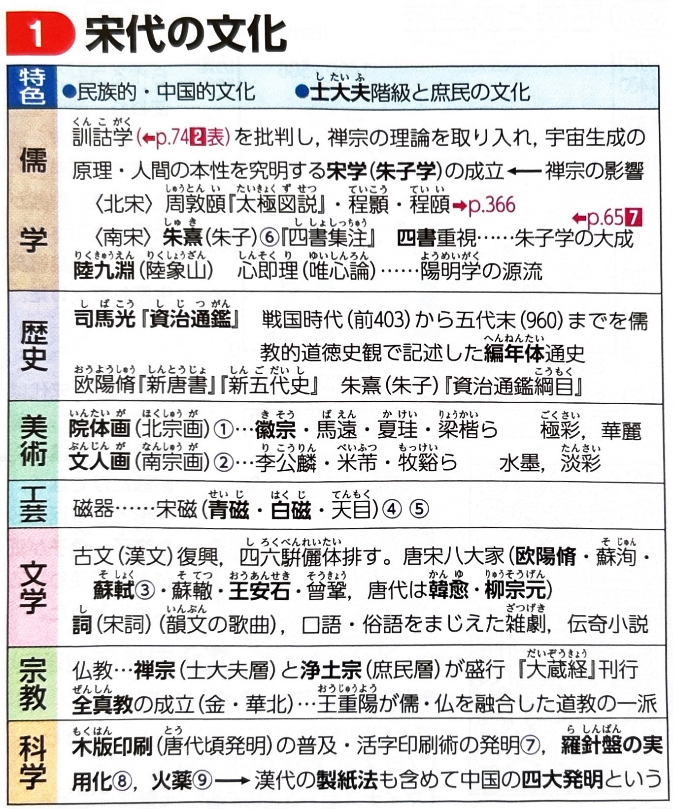
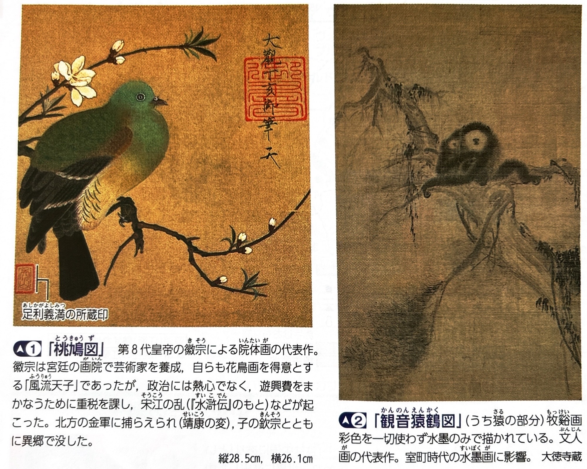
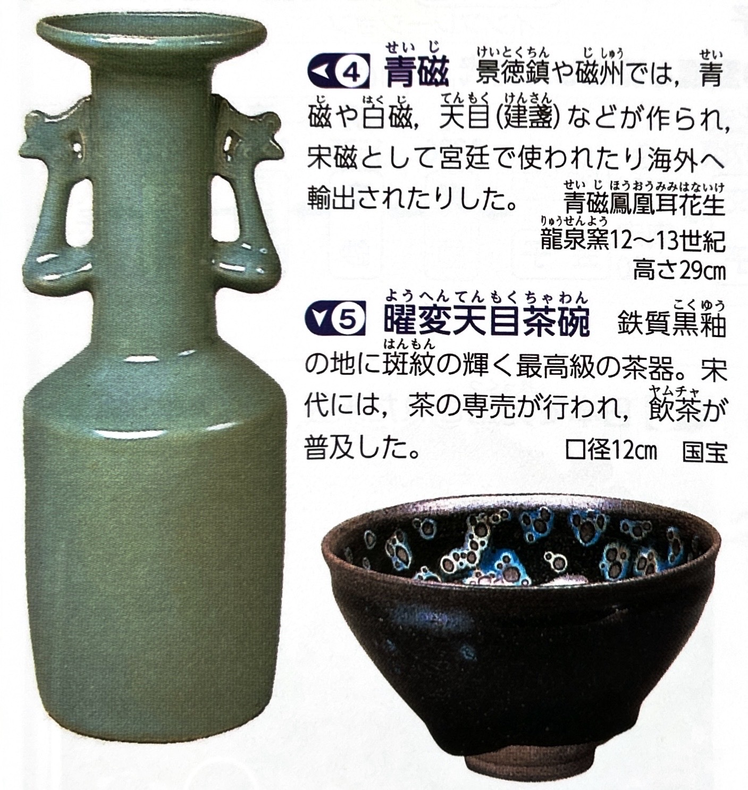
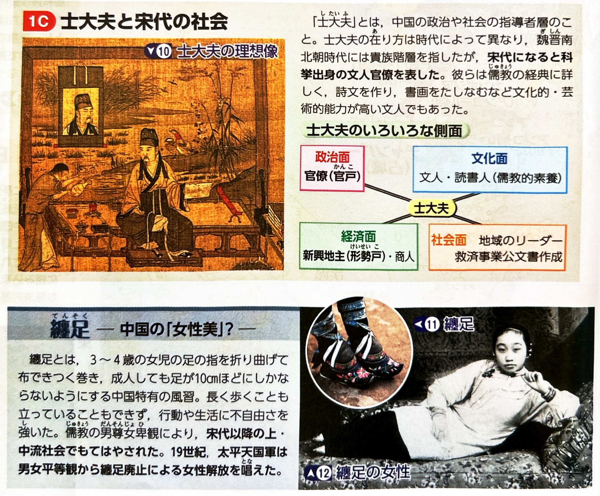
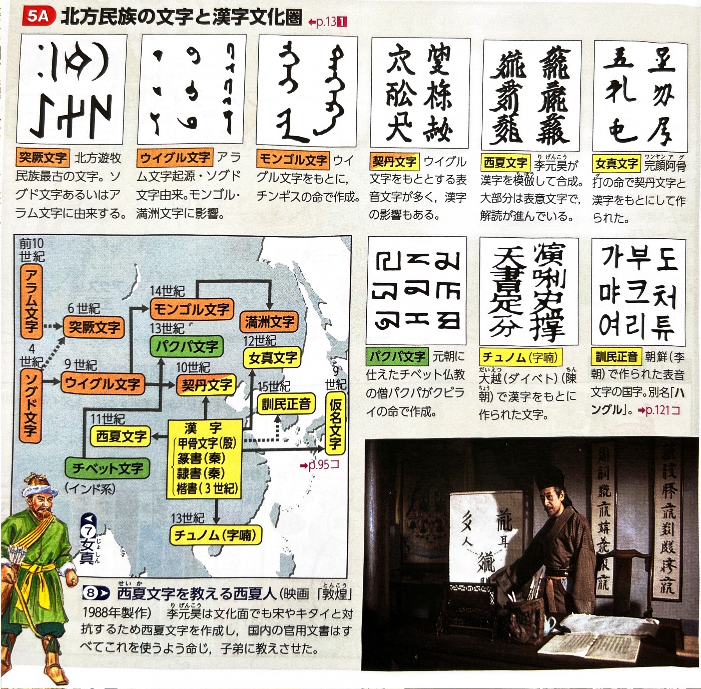